Grafikler Menüsü
Grafikler Menüsü:
Bu menünün altında bulunan kısımlarda elde bulunan verilerin üzerinden elde edilebilecek
çeşitli grafikler mevcuttur. Alt menüler resimde gösterilmiştir.
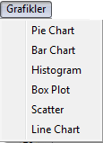
Pie Chart: Bu altmenüyle, aktif veriseti içerisinde bulunan özelliklerden (feature)
non-numerical olanlar yani sayısal ifade olmayan parçaların orantısal olarak yansıtıldığı pasta dilimlerine benzeyen grafikleri
elde edilebilir.
Kullanımına bakacak olursak;
PIVA'nın
Grafikler menüsünden
Pie Chart altmenüsüne tıklandığı zaman ekranın
Parametreler için ayarlanan
alanına Pie chart'ı oluşturmak için gereken parametreleri kullanıcıdan alan ekran gelecektir.
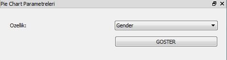
Bu ekranda, oluşturulacak grafik için seçilebilecek özellikler eklenecektir. Grafiği oluşturulmak istenen özellik seçildikten sonra
GÖSTER butonuna tıklanarak sonuçlar
Grafikler ekranında görülebilir.
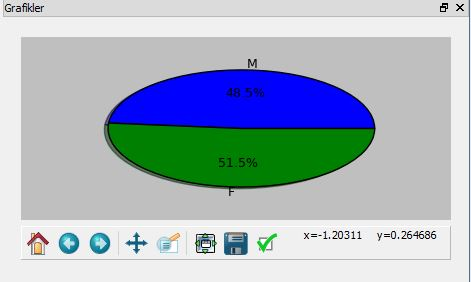
Üstünde çalışılan verisetinden elde edilen Pie Chart.
Bar Chart: Bu altmenüyle, aktif veriseti içerisinde bulunan özelliklerden (feature)
non-numerical olanlar yani sayısal ifade olmayan parçaların birim miktarların yanyana sütunların yüksekliği ile
orantılı olduğu grafikler elde edilebilir.
Kullanımına bakacak olursak;
PIVA'nın
Grafikler menüsünden
Bar Chart altmenüsüne tıklandığı zaman ekranın
Parametreler için ayarlanan alanına Bar chart'ı oluşturmak için gereken parametreleri kullanıcıdan alan ekran gelecektir.
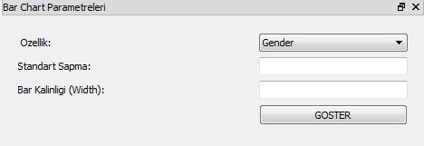
Bu ekranda, oluşturulacak grafik için seçilebilecek özellikler eklenecektir. Grafiği oluşturulmak istenen özellik seçildikten sonra
gerekli parametreler girilerek
GÖSTER butonuna tıklanarak sonuçlar
Grafikler ekranında görülebilir.
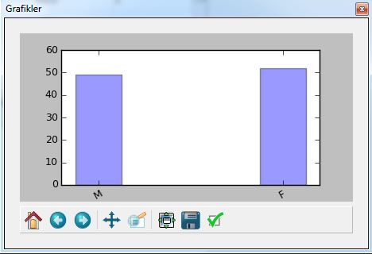
Üstünde çalışılan verisetinden elde edilen Bar Chart.
Histogram: Bu altmenüyle, aktif veriseti içerisinde bulunan özelliklerden numerical olanlar
yani sayısal ifadeler için, gruplandırılmış bir veri dağılımının sütun grafiğiyle gösterimidir.
Diğer bir ifadeyle tekrarlı sayılardan oluşan elimizdeki verileri, uygulanan işlemlerden sonra önce tabloya, tablodan
yararlanarak grafiğe aktarılması yani veri gruplarının grafiğinin dikdörtgen sütunlar halinde gösterilmesine
histogram denir.
Kullanımına bakacak olursak;
PIVA'nın
Grafikler menüsünden
Histogram altmenüsüne tıklandığı zaman ekranın
Parametreler için ayarlanan alanına Histogramı oluşturmak için gereken parametreleri kullanıcıdan alan ekran gelecektir.
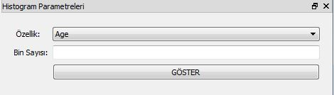
Bu ekranda, oluşturulacak histogram grafiği için seçilebilecek özellikler eklenecektir. Grafiği oluşturulmak istenen özellik seçildikten sonra
gerekli parametreler girilerek
GÖSTER butonuna tıklanarak sonuçlar
Grafikler ekranında görülebilir.
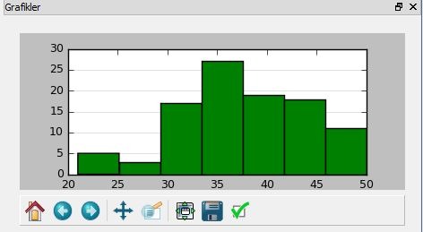
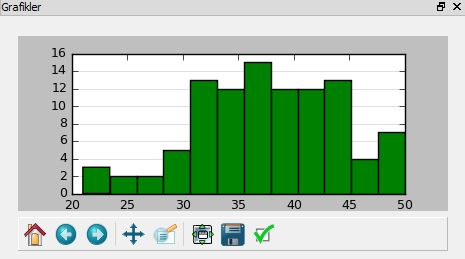
Üstünde çalışılan verisetinden, girilen iki farklı bin sayısının sonucunda elde edilen Histogram çıktıları.
Box Plot: Bu altmenüyle, aktif veriseti içerisinde bulunan özelliklerden numerical olanlar
yani sayısal ifadeler için, niceliksel verileri görsel şekilde özetlemek için kullanılır.
Kutu diyagramı (Box Plot), bir değişkenin sıklık dağılımını veya normalliğini analiz etmek için kullanılabilir.
Kutu grafik dağılımının şekli, merkezi eğilimi ve değişkenlik göstergesi açısından yararlıdır.
Kullanımına bakacak olursak;
PIVA'nın
Grafikler menüsünden
Box Plot altmenüsüne tıklandığı zaman ekranın
Parametreler için ayarlanan alanına Box Plot'u oluşturmak için gereken parametreleri kullanıcıdan alan ekran gelecektir.
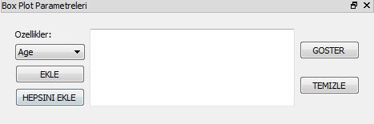
Bu ekranda, oluşturulacak histogram grafiği için seçilebilecek özellikler eklenecektir. Grafiği oluşturulmak istenen özellik seçildikten sonra
gerekli parametreler girilerek
GÖSTER butonuna tıklanarak sonuçlar
Grafikler ekranında görülebilir.
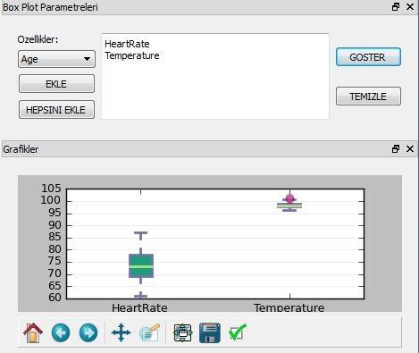
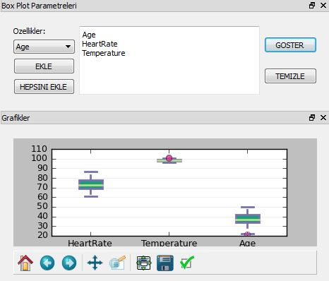
Üstünde çalışılan verisetinden, girilen farklı parametrelerin sonucunda elde edilen Box Plot çıktıları.
Scatter: Bu altmenüyle, aktif veriseti içerisinde bulunan özelliklerden numerical olanlar
yani sayısal ifadeler için, iki değişken arasındaki ilişkileri göstermek için kullanılabilir.
Her gözlem için noktalar X ekseni üzerinde değişkenlerin birinin değerini ve Y ekseni üzerinde diğer değişkeninin değerini gösterir.
Kullanımına bakacak olursak;
PIVA'nın
Grafikler menüsünden
Scatter altmenüsüne tıklandığı zaman ekranın
Parametreler için ayarlanan alanına Scatter chart'ı oluşturmak için gereken parametreleri kullanıcıdan alan ekran gelecektir.
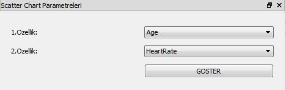
Bu ekranda, oluşturulacak Scatter chart için seçilebilecek özellikler eklenecektir. Grafiği oluşturulmak istenen özellikler seçildikten
sonra
GÖSTER butonuna tıklanarak sonuçlar
Grafikler ekranında görülebilir.
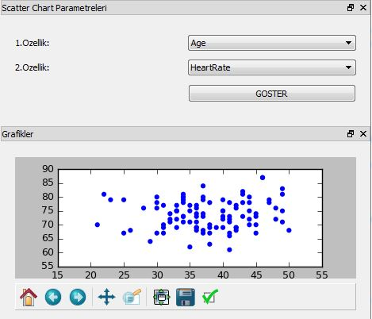
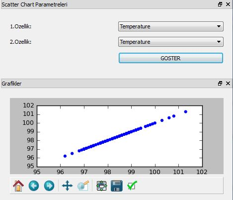
Üstünde çalışılan verisetinden, girilen farklı parametrelerin sonucunda elde edilen Scatter plot çıktıları.
Line Chart: Bu altmenüyle, aktif veriseti içerisinde bulunan özelliklerden numerical olanlar
yani sayısal ifadeler için, verilerin yatay ve dikey eksendeki değerleri işaretlenerek bulunan noktaların çizgilerle
birleştirilmesi sonucunda elde edilen grafiklerdir.
Kullanımına bakacak olursak;
PIVA'nın
Grafikler menüsünden
Line Chart altmenüsüne tıklandığı zaman ekranın
Parametreler için ayarlanan alanına Line Chart'ı oluşturmak için gereken parametreleri kullanıcıdan alan ekran gelecektir.
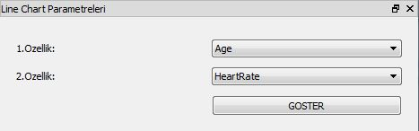
Bu ekranda, oluşturulacak line chart için seçilebilecek özellikler eklenecektir. Grafiği oluşturulmak istenen özellikler seçildikten
sonra
GÖSTER butonuna tıklanarak sonuçlar
Grafikler ekranında görülebilir.
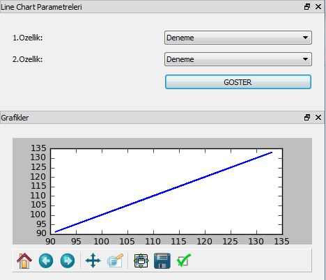
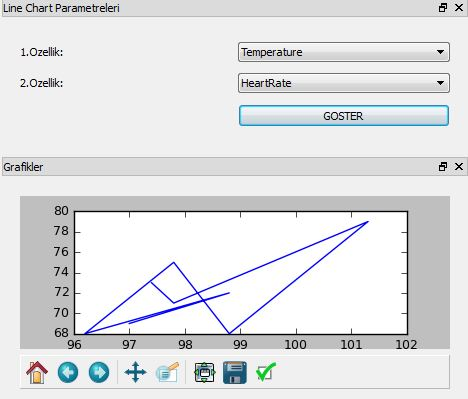
Tek özellik seçimi ve farklı iki özelliğin seçimi sonucunda oluşan Line Chart çıktıları.